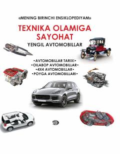

TOBolalar uchun yengil avtomobillar tarixi va turlari haqida qiziqarli ensiklopediya.
Ushbu bolalar ensiklopediyasi yengil avtomobillar tarixi, ularning turlari, tuzilishi va poyga mashinalari haqida qiziqarli ma'lumotlar beradi. Kitob o'quvchilarni texnika olami va mashinalar ixtiro qilinishi jarayoni bilan tanishtiradi. Nashr yosh kitobxonlarning texnik bilimlarini kengaytirishga mo'ljallangan.